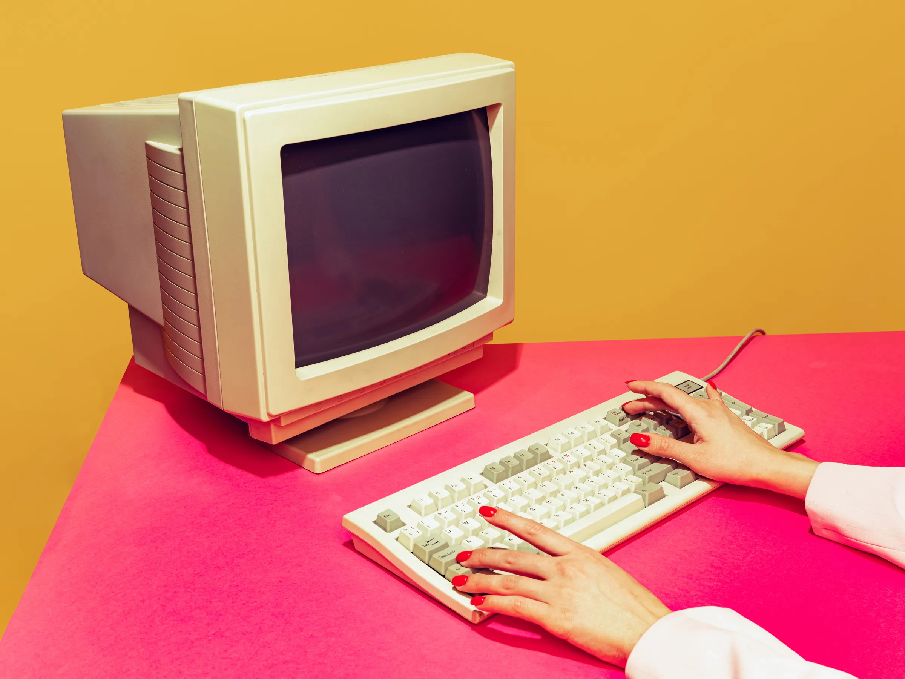

Ensure the power cable is securely plugged into the back of your PC tower and directly into a working wall power outlet or surge protector.
Locate the main power button on the front or top panel of your PC case. Press it firmly once and listen for the internal cooling fans to start spinning.
Wait a few moments for the monitor to light up, pass the motherboard splash screen, and load straight into your operating system login screen.
Building or owning a computer is much easier when you understand what the main internal components actually do. Every part works together to process information, run applications, and render graphics smoothly.
Often called the brain of the computer, the CPU handles instructions from your programs, games, and operating system. A faster CPU means your computer can calculate tasks and execute commands much quicker.
The GPU is responsible for rendering images, video, and 3D graphics. If you enjoy playing modern video games or editing high-resolution video, a powerful graphics card is essential for high frame rates.
RAM acts as short-term memory for apps currently running, allowing you to multitask effortlessly. Meanwhile, your Solid State Drive (SSD) provides long-term storage for your files, games, and operating system, ensuring lightning-fast boot times.